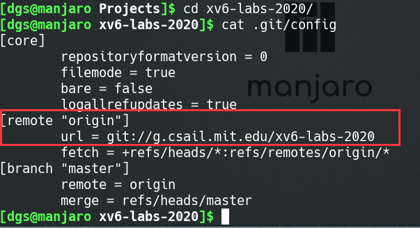

将实验代码提交到github
[!DANGER] MIT 6.S081 这门课程每个lab对应一个git分支，所以请不要擅自修改原有分支
- 首先将mit的实验代码克隆到本地
git clone git://g.csail.mit.edu/xv6-labs-2020
- 在github创建一个新的空仓库
创建完成后会有提示代码，请不要根据提示代码操作，并且记下右图中红色标注的仓库地址


- 添加git仓库地址
查看本地仓库的git配置文件，可以看到origin主机名下已经有了对应的上游仓库地址
cd xv6-labs-2020/
cat .git/config

因此我们不要使用origin，可以使用其他主机名对应到github仓库，例如，我使用github
git remote add github 你的仓库地址
cat .git/config

git push命令功能：
git push命令用于从将本地的分支版本上传到远程并合并。- 命令格式：
git push <远程主机名> <本地分支名>:<远程分支名>
如果本地分支名与远程分支名相同，则可以省略冒号：
git push <远程主机名> <本地分支名>
更多用法请自行搜索
- 将实验代码推送github仓库
例如：将实验1用到的util分支推送到github
git checkout util
git push github util:util
需要你输入账户密码，提交就成功了
其他实验仓库的提交同理
- xv6实验git分支建议
建议是每个实验创建一个测试分支，例如对于util来说
git checkout util # 切换到util分支
git checkout -b util_test # 建立并切换到util的测试分支
当你在util_test分支中每测试通过一个作业，请提交（git commit）你的代码，并将所做的修改合并（git merge）到util中，然后提交（git push）到github
git add .
git commit -m "完成了第一个作业"
git checkout util
git merge util_test
git push github util:util
- 其他
你还可以添加gitee，防止github有时无法访问的问题